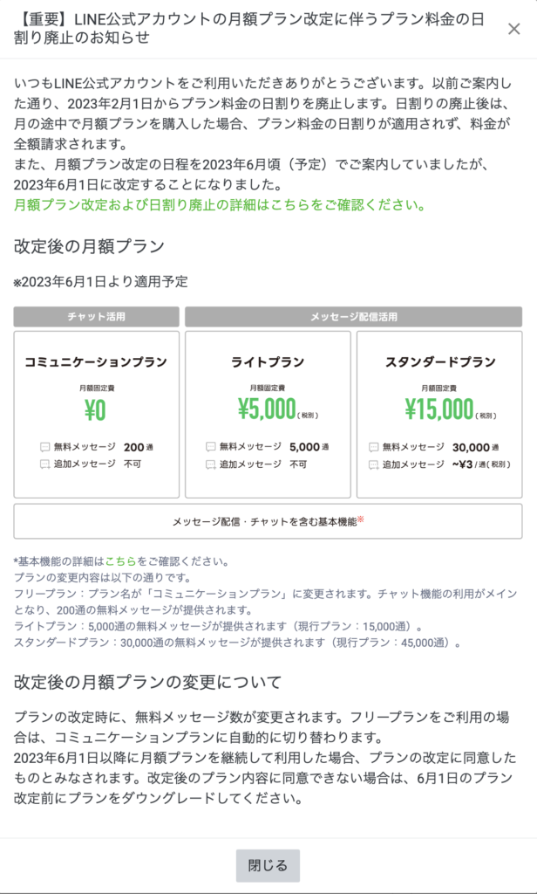
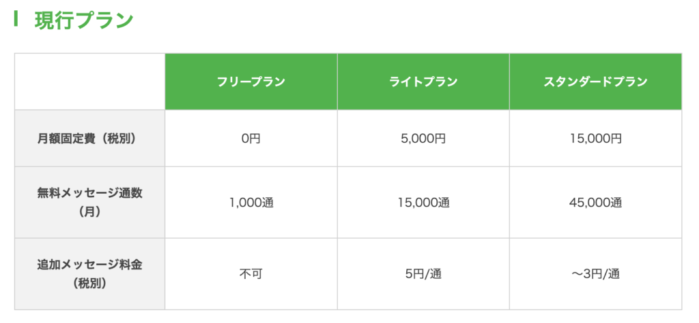

#048_LINE公式価格改訂

配信数が半減以下に？！
LINE公式アカウントが、価格改定を発表しました。内容を見ていくと、これまでと較べ配信数が大幅に減る見込みです。。。なぜこんな改定をしたのでしょうか？ 以下、詳細を見ていきましょう。

すでに2月1日から、「日割り」での利用が出来なくなっています。
たとえば、以前なら「3月20日に契約すると、3月の利用料は10日分」というような料金設定だったのですが、今月からは「20日に契約しても30日分請求される」ということです。
電気料金の値上げでもなく、配送料の都合でもなく、物価とは関係ない今回の価格改訂。。。LINE社の言い分は、「一方的なメッセージ配信は相手に迷惑なので、友だちの登録情報を元に、双方向に利益のある配信を行えるように」というような理由だそうですが。。。
これからLINE公式アカウントを活用して、効率よく集客しよう！という経営者や個人事業主の方は、ご注意ください。
事業をスタートするにあたってはいろいろなお金が先んじてかかります。経費を節約したければ、真っ先に考えたい広告宣伝費。そこに費用をかけずに集客できるのがLINE公式アカウントの良さですが、今後はより情報の精査と友だち情報の分析・活用が必要になります。
すでに友だちが大勢いるアカウントも要注意！

1,000人以上の友だちがいて、定期的な配信を行っていた場合も注意が必要です。特に「ライトプラン」の利用者の方。これまで月5,000円で15,000通の配信が出来たのですが、今回の改訂で月5,000通しか配信できなくなります。
単純に1,000人の友だちがいたとして、以前なら月15回メッセージ配信できたのに、今後は5回しか配信できないのです。やはりプランを上げるしか方法はないのか・・・と考えますよね。
プラン移行しなくても大丈夫
でも、安心してください。配信数が減ったとしても、友だちに効率よくメッセージを届けることは可能です。
簡単に言うと、配信メッセージの質をあげること。そして、リッチメニューも含め、あらためて自社のアカウントを充実させることが重要です。きちんと作り込まれたアカウントであれば、配信数に振り回されることもなく、スムースに友だちを自社サービスに誘導することが可能だからです。
いい加減なアカウントから、興味がないメッセージを頻繁に送られるのは誰だって嫌ですよね。興味がある配信なら、そんなにしょっちゅう来なくても問題ありません。むしろ、たまの配信を楽しみに待っていてくれる友だちも増えるでしょう。
メッセージ通数が減っても、より精度をあげていけば良いのです。
ただ、配信のどの部分を見直せばいいのかは、業種・規模・友だち数など、それぞれに応じた個別の対応が必要です。
価格改定はすでに始まっています。ぜひ、我々プロのコンサルタントにご相談ください。 親身に寄り添い、最適なプラン選びや運営方法についてもアドバイスさせていただきます。また、まだ公式LINEを開設してないなら、どのようなアカウントにしたらいいかも、合わせてお問い合わせくださいね。
費用改訂の詳細はこちら → https://www.linebiz.com/jp/news/20221031/